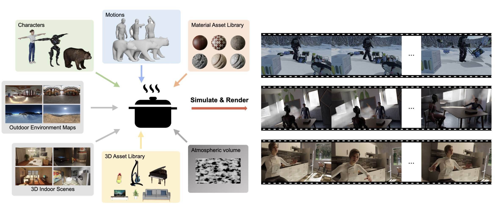

Abstract
PointOdyssey is a large-scale synthetic dataset, and data generation framework, for the training and evaluation of long-term fine-grained tracking algorithms. Our goal is to advance the state-of-the-art by placing emphasis on long videos with naturalistic motion. Toward the goal of naturalism, we animate deformable characters using real-world motion capture data, we build 3D scenes to match the motion capture environments, and we render camera viewpoints using trajectories mined via structure-from-motion on real videos. We create combinatorial diversity by randomizing character appearance, motion profiles, materials, lighting, 3D assets, and atmospheric effects. Our dataset currently includes 104 videos, averaging 2,000 frames long, with orders of magnitude more correspondence annotations than prior work. We show that existing methods can be trained from scratch in our dataset and outperform the published variants. Finally, we introduce modifications to the PIPs point tracking method, greatly widening its temporal receptive field, which improves its performance on PointOdyssey as well as on two real-world benchmarks. Our data and code are publicly available.
Simulation Engine
A scalable framework for generating realistic training data with rich annotations for video understanding.

We randomly generate physically realistic and semantically plausible
scenes, by sampling human and animal subjects, motion trajectories for the subjects and the camera, 3D physical assets,
materials, environment maps for outdoor scenes, manually created environments for indoor scenes, as well as lighting and
atmospheric effects. From these scenes we render videos, paired with various ground truth.
PIPs++
A new state-of-the-art for long-range point tracking.
We modify PIPs, greatly widening its 8-frame temporal window, and incorporating a template-update mechanism. Experimental results show that our method achieves higher tracking accuracy than all existing methods, both on the PointOdyssey test set and real-world benchmarks.
Bibtex
@inproceedings{zheng2023point,
author = {Yang Zheng and Adam W. Harley and Bokui Shen and Gordon Wetzstein and Leonidas J. Guibas},
title = {PointOdyssey: A Large-Scale Synthetic Dataset for Long-Term Point Tracking},
booktitle = {ICCV},
year = {2023}
}